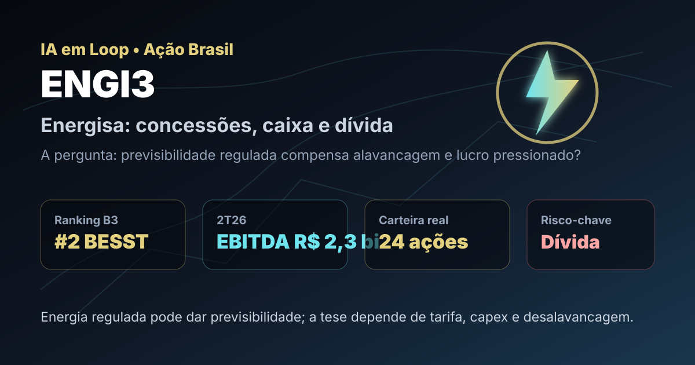

31/08: ENGI3, Energisa e o dividendo que depende da regulação
ENGI3 entrou no aporte real de agosto da carteira BESST e Buffett B3 e aparece no topo do rastreador de empresas perenes. A pergunta central é direta: a previsibilidade de energia regulada compensa o peso de dívida, investimento e revisão tarifária?

Energia elétrica tende a ser previsível na demanda, mas o retorno do acionista ainda depende de tarifa, capex, dívida e disciplina regulatória.
Resposta curta: ativo perene, mas a dívida manda na régua de segurança
Na base local do IA em Loop de agosto de 2026, ENGI3 aparece em 2º lugar no ranking BESST e Buffett B3, com preço de R$ 12,05, dividend yield de 5,39%, P/VP de 0,23, P/L de 16,74, 18 anos com dividendos e score de 64,4. No aporte real de agosto, a carteira BESST e Buffett B3 comprou 24 ações a preço médio de R$ 11,48, total bruto de R$ 275,52.
A leitura prática é: ENGI3 tem mérito como infraestrutura regulada comprada com desconto patrimonial, mas não é tese sem risco. A empresa precisa converter concessões, reajustes e base de ativos em caixa suficiente para financiar investimento, pagar dívida e preservar dividendos sem apertar demais o balanço.
O que os dados verificados mostram
No release do 2T26, a Energisa reportou receita operacional bruta de R$ 12,780 bilhões no trimestre, alta de 10% frente ao 2T25, e receita líquida ajustada de R$ 7,250 bilhões, alta de 4%. O EBITDA ficou em R$ 2,266 bilhões, alta de 4%, enquanto o EBITDA ajustado recorrente atingiu R$ 1,954 bilhão, alta de 1%.
O ponto de atenção está abaixo do EBITDA: o resultado financeiro negativo foi de R$ 1,824 bilhão no 2T26, alta de 72% frente ao 2T25, e o lucro líquido consolidado foi negativo em R$ 40 milhões no trimestre. No acumulado de seis meses, a companhia ainda registrou lucro líquido consolidado de R$ 535 milhões, mas abaixo dos R$ 1,516 bilhão de 6M25.
A administração também destacou que a Dívida Líquida/EBITDA ajustado covenants recuou de 3,5 vezes para 3,1 vezes no trimestre e que a reciclagem de parte do portfólio de transmissão por R$ 2,3 bilhões contribuiria para reduzir o indicador de alavancagem em 0,2 vez. A empresa informou ainda a renovação dos contratos de concessão de quatro de suas maiores distribuidoras por mais 30 anos, reforçando previsibilidade de longo prazo.
| Métrica verificada | Fonte/período | Valor | Leitura |
|---|---|---|---|
| Posição no ranking | BESST e Buffett B3 IA em Loop | #2 | forte encaixe em perenidade e renda |
| Aporte recente | Nota de corretagem de agosto | 24 ações a R$ 11,48 | posição real em carteira |
| EBITDA | Release 2T26 | R$ 2,266 bi | operação grande e resiliente |
| Resultado financeiro | Release 2T26 | -R$ 1,824 bi | dívida pesa no lucro |
| Dívida líquida/EBITDA | Release 2T26 | 3,1x | alavancagem administrável, mas relevante |
Por que Energisa importa agora
Energisa importa porque reúne uma tese clássica de infraestrutura: demanda essencial, contratos regulados, ativos de longa duração e possibilidade de repasse tarifário. Em tese, isso reduz a chance de colapso operacional. Na prática, o acionista ainda precisa aceitar o ciclo de investimentos, revisões tarifárias, custo de capital e endividamento elevado.
O P/VP de 0,23 chama atenção porque sugere desconto patrimonial forte. Mas, em elétrica, patrimônio contábil não basta. A pergunta correta é se a base regulatória, a remuneração permitida e a eficiência operacional conseguem gerar retorno real acima do custo da dívida. Se a companhia cresce investindo muito e capturando tarifa adequada, o desconto pode ser oportunidade. Se o custo financeiro come o lucro, o desconto pode persistir.
ENGI3 tem cara de ativo perene de carteira: energia elétrica, escala, concessões e histórico de dividendos. O teste não é demanda; o teste é balanço. A tese melhora se a desalavancagem avançar, se reajustes tarifários protegerem caixa e se o capex gerar retorno regulatório adequado. Piora se juros, dívida e efeitos não recorrentes continuarem comprimindo lucro líquido.
O que favorece e o que ameaça a tese
Favoráveis
• Presença em 2º lugar no ranking BESST e Buffett B3.
• Aporte real recente, conectando tese e carteira publicada.
• Setor essencial, com demanda menos volátil que consumo discricionário.
• EBITDA operacional robusto no 2T26.
• Renovação de concessões relevantes por prazo longo.
Desfavoráveis
• Resultado financeiro elevado reduz a qualidade do lucro.
• Alavancagem de 3,1 vezes ainda exige disciplina.
• Lucro líquido trimestral negativo mostra fragilidade abaixo da linha operacional.
• Reajustes e revisões tarifárias podem gerar ruído político e regulatório.
• Empresas elétricas exigem capex constante para manter e expandir ativos.
Checklist para acompanhar daqui em diante
- Dívida: acompanhar dívida líquida/EBITDA, custo médio, prazos e rolagem.
- Tarifas: observar reajustes, revisões, inflação usada nos contratos e reação regulatória.
- Capex: verificar se investimentos entram na base de remuneração com retorno adequado.
- Lucro recorrente: separar efeitos contábeis e extraordinários da geração normal de caixa.
- Dividendos: confirmar se a distribuição vem de lucro e caixa sustentáveis, não de alavancagem.
Conclusão
A resposta para a pergunta do post é: ENGI3 parece uma tese perene interessante, mas o desconto só vira margem de segurança se a dívida continuar cedendo e a regulação proteger o caixa. O ranking aponta qualidade defensiva e histórico de dividendos; a compra real confirma acompanhamento em carteira; o release mostra operação grande, mas lucro pressionado por despesa financeira.
Na régua do IA em Loop, Energisa deve ser acompanhada como infraestrutura regulada com alavancagem relevante. A tese fica mais forte com desalavancagem, tarifas adequadas e EBITDA recorrente estável. Fica mais fraca se o custo financeiro impedir que a previsibilidade operacional chegue ao acionista.